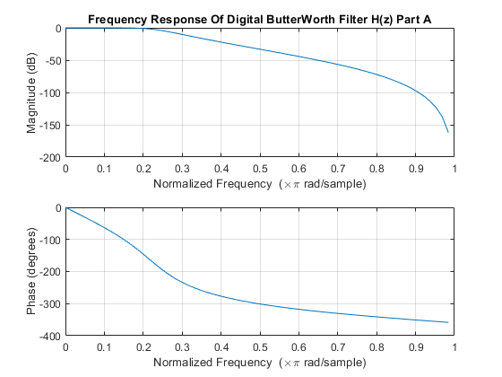
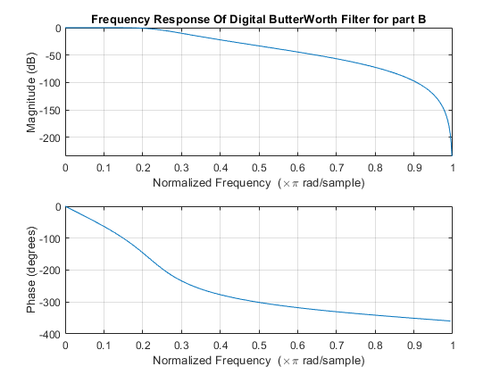
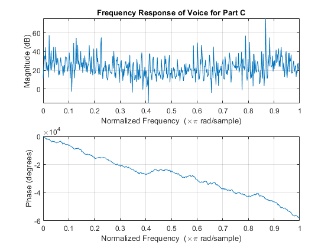
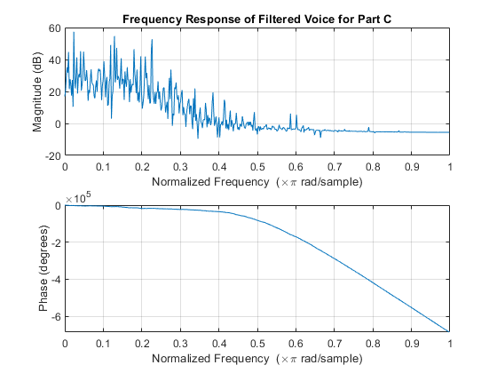

Digital Signal Processing MATLAB HW2 - q2
Professor: Dr. Sheikhzadeh Author: [SeyedAli] - [SeyedHosseini] E-mail: [alisnake@aut.ac.ir] %which I`m about to change ASAP University: Amirkabir University of Technology
Contents
Clear recent data
clear; close all; clc;
Part A
% Digital Filter Specifications: wp = 0.2*pi; % digital Passband freq in Hz ws = 0.4*pi; % digital Stopband freq in Hz Rp = 1; % Passband ripple in dB As = 20; % Stopband attenuation in dB % Analog Prototype Specifications: T = 2; % Set T=2 OmegaP = (2/T)*tan(wp/2); % Prewarp Prototype Passband freq OmegaS = (2/T)*tan(ws/2); % Prewarp Prototype Stopband freq [cs,ds] = afd_butt(OmegaP,OmegaS,Rp,As); % Analog Butterworth Prototype Filter Calculation Fs = 1/T ; %sample rate to a discrete equivalent. [cz , dz] = bilinear(cs,ds,Fs); %Bilinear Transformation on H(s) to H(z) [C,B,A] = sdir2cas(cz,dz); %FInding Coefficient In Cascade Form figure(1) freqz(cz,dz,64) %plotting Freq Response of H(z) title("Frequency Response Of Digital ButterWorth Filter H(z) Part A")
Part B
% Digital Filter Specifications: wp = 0.2*pi; % digital Passband freq in Hz ws = 0.4*pi; % digital Stopband freq in Hz Rp = 1; % Passband ripple in dB As = 20; % Stopband attenuation in dB % Analog Prototype Specifications: T = 2; % Set T=2 OmegaP = (2/T)*tan(wp/2); % Prewarp Prototype Passband freq OmegaS = (2/T)*tan(ws/2); % Prewarp Prototype Stopband freq % Analog Prototype Order Calculation: N =ceil((log10((10^(Rp/10)-1)/(10^(As/10)-1)))/(2*log10(OmegaP/OmegaS))); fprintf('\n Butterworth Filter Order for Part B = %2.0f \n',N) OmegaC_b = OmegaP/((10^(Rp/10)-1)^(1/(2*N))); %Analog BW prototype cutoff wn = 2*atan((OmegaC_b*T)/2); %Digital BW cutoff freq % Digital Butterworth Filter Design: wn = wn/pi; %Digital Butter cutoff in pi units [czb,dzb]=butter(N,wn); [Cb,Bb,Ab] = sdir2cas(czb,dzb) ; %FInding Coefficient In Cascade Form figure(2) freqz(czb,dzb) title("Frequency Response Of Digital ButterWorth Filter for part B")
Butterworth Filter Order for Part B = 4
Part C
[voice , Fs1] = audioread("multi_tone.wav"); %Storing audio in matlab voice = voice' ; figure(3) freqz(voice) title(" Frequency Response of Voice for Part C ") voice_filtered = filter(czb,dzb,voice); %Filtered Voice with Designed Filtered in Section B figure(4) freqz(voice_filtered) title(" Frequency Response of Filtered Voice for Part C ") 
Function Impulse Invariance
function [b,a] = imp_invr(c,d,T) % Impulse Invariance Transformation from Analog to Digital Filter % --------------------------------------------------------------- % [b,a] = imp_invr(c,d,T) % b = Numerator polynomial in z^(-1) of the digital filter % a = Denominator polynomial in z^(-1) of the digital filter % c = Numerator polynomial in s of the analog filter % d = Denominator polynomial in s of the analog filter % T = Sampling (transformation) parameter % [R,p,k] = residue(c,d); p = exp(p*T); [b,a] = residuez(R,p,k); b = real(b'); a = real(a'); end
Function for ButterWorth Design1
function [b,a] = u_buttap(N,Omegac); % Unnormalized Butterworth Analog Lowpass Filter Prototype % -------------------------------------------------------- % [b,a] = u_buttap(N,Omegac); % b = numerator polynomial coefficients of Ha(s) % a = denominator polynomial coefficients of Ha(s) % N = Order of the Butterworth Filter % Omegac = Cutoff frequency in radians/sec % [z,p,k] = buttap(N); p = p*Omegac; k = k*Omegac^N; B = real(poly(z)); b0 = k; b = k*B; a = real(poly(p)); end
Function for ButterWorth Design2
function [b,a] = afd_butt(Wp,Ws,Rp,As); % Analog Lowpass Filter Design: Butterworth % ----------------------------------------- % [b,a] = afd_butt(Wp,Ws,Rp,As); % b = Numerator coefficients of Ha(s) % a = Denominator coefficients of Ha(s) % Wp = Passband edge frequency in rad/sec; Wp > 0 % Ws = Stopband edge frequency in rad/sec; Ws > Wp > 0 % Rp = Passband ripple in +dB; (Rp > 0) % As = Stopband attenuation in +dB; (As > 0) % if Wp <= 0 error('Passband edge must be larger than 0') end if Ws <= Wp error('Stopband edge must be larger than Passband edge') end if (Rp <= 0) || (As < 0) error('PB ripple and/or SB attenuation ust be larger than 0') end N = ceil((log10((10^(Rp/10)-1)/(10^(As/10)-1)))/(2*log10(Wp/Ws))); fprintf('\n Butterworth Filter Order for Part A = %2.0f \n',N) OmegaC = Wp/((10^(Rp/10)-1)^(1/(2*N))); [b,a]=u_buttap(N,OmegaC); end
Butterworth Filter Order for Part A = 4
Function Direct to Cascade Form
function [C,B,A] = sdir2cas(b,a); % DIRECT-form to CASCADE-form conversion in s-plane % ------------------------------------------------- % [C,B,A] = sdir2cas(b,a) % C = gain coefficient % B = K by 3 matrix of real coefficients containing bk’s % A = K by 3 matrix of real coefficients containing ak’s % b = numerator polynomial coefficients of DIRECT form % a = denominator polynomial coefficients of DIRECT form % Na = length(a)-1; Nb = length(b)-1; % compute gain coefficient C b0 = b(1); b = b/b0; a0 = a(1); a = a/a0; C = b0/a0; % % Denominator second-order sections: p= cplxpair(roots(a)); K = floor(Na/2); if K*2 == Na % Computation when Na is even A = zeros(K,3); for n=1:2:Na Arow = p(n:1:n+1,:); Arow = poly(Arow); A(fix((n+1)/2),:) = real(Arow); end elseif Na == 1 % Computation when Na = 1 A = [0 real(poly(p))]; else % Computation when Na is odd and > 1 A = zeros(K+1,3); for n=1:2:2*K Arow = p(n:1:n+1,:); Arow = poly(Arow); A(fix((n+1)/2),:) = real(Arow); end A(K+1,:) = [0 real(poly(p(Na)))]; end % Numerator second-order sections: z = cplxpair(roots(b)); K = floor(Nb/2); if Nb == 0 % Computation when Nb = 0 B = [0 0 poly(z)]; elseif K*2 == Nb % Computation when Nb is even B = zeros(K,3); for n=1:2:Nb Brow = z(n:1:n+1,:); Brow = poly(Brow); B(fix((n+1)/2),:) = real(Brow); end elseif Nb == 1 % Computation when Nb = 1 B = [0 real(poly(z))]; else % Computation when Nb is odd and > 1 B = zeros(K+1,3); for n=1:2:2*K Brow = z(n:1:n+1,:); Brow = poly(Brow); B(fix((n+1)/2),:) = real(Brow); end B(K+1,:) = [0 real(poly(z(Nb)))]; end end